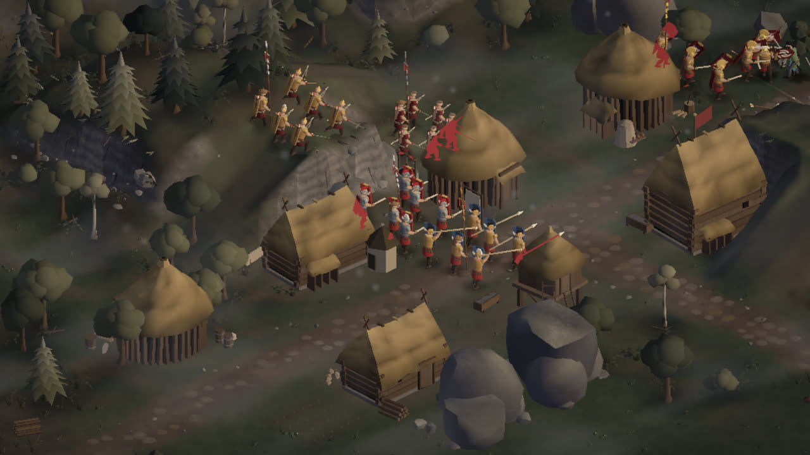

Legio: Gallic Frontier
A real-time tactics game for Android · in testing
Join the test: play all 25 battles free

Gaul, 58–51 BC. Lead a handful of Roman squads from village to village across a painted map of Caesar’s campaign. Warbands come out of the mist in waves; hold the houses, find and burn the Gallic camp, and keep your men alive: the fallen don’t come back.
- Battles of two to four minutes, made for the phone. Tap a squad and time slows down while you give the order.
- Legionaries, archers and spearmen, each beating one kind of enemy and losing to another.
- High ground, woods, fords and Roman forts change every fight.
- Twenty-five villages, each battlefield generated for your campaign.
Support
Questions, bugs, ideas: legio.game.support@gmail.com